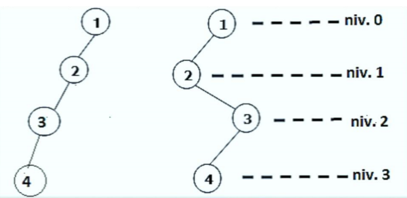

Arborele binar este un arbore cu rădăcină cu proprietatea că fiecare nod al său are cel mulți 2
descendenți direcți (succesori) denumiți subarborele stâng As și subarborele drept Ad.
Arborii binari sunt folosiți mai ales drept arbori binari de căutare sau și la structurile de date de tip heap.
1. Pentru un arbore binar există un nod privilegiat numit nod rădăcină, iar celelalte noduri sunt repartizate
în 2 grupuri disjuncte, care, fiecare la rândul său formează un arbore binar.
2. Ordinul unui nod dintr-un arbore binar poate fi:
- 0 pentru nodul terminal
- 1 dacă unul din subarbori este vid
- 2
Există următoarele tipuri speciale de arbori binari:
- strict: este un arbore binar cu proprietatea că, fiecare nod, cu excepția nodurilor terminale,
are exact 2 succesori;
- complet: este un arbore binar strict care are toate nodurile terminale pe același nivel;
- aproape complet: este un arbore binar complet până la penultimul nivel, la care
completarea cu noduri la ultimul nivel se face de la stânga la dreapta;
- echilibrat: este un arbore binar cu proprietatea că diferența înălțimilor celor 2 subarbori ai
oricărui nod este cel mult 1;
- perfect echilibrat: este un arbore binar care are proprietatea că, pentru fiecare nod al său,
diferența dintre numărul de noduri dintre subarborele stâng și subarborele drept este cel mult 1;
- degenerat: este un arbore binar care are n noduri dispuse pe n niveluri.
